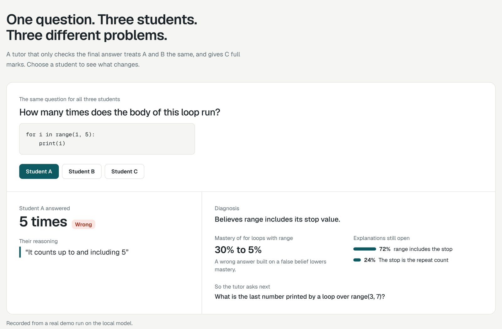
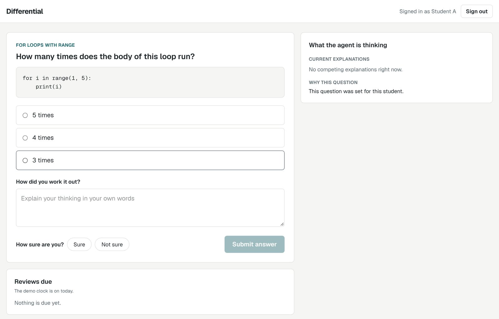
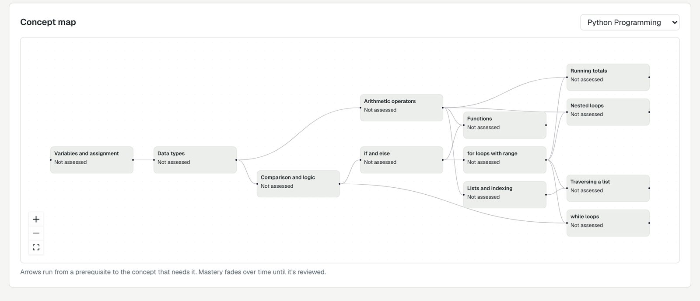
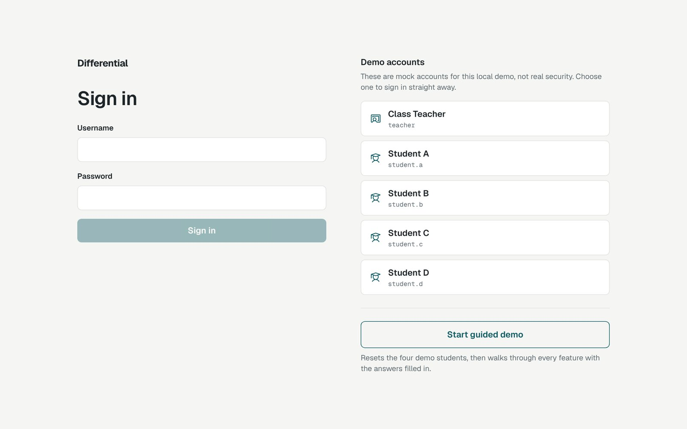
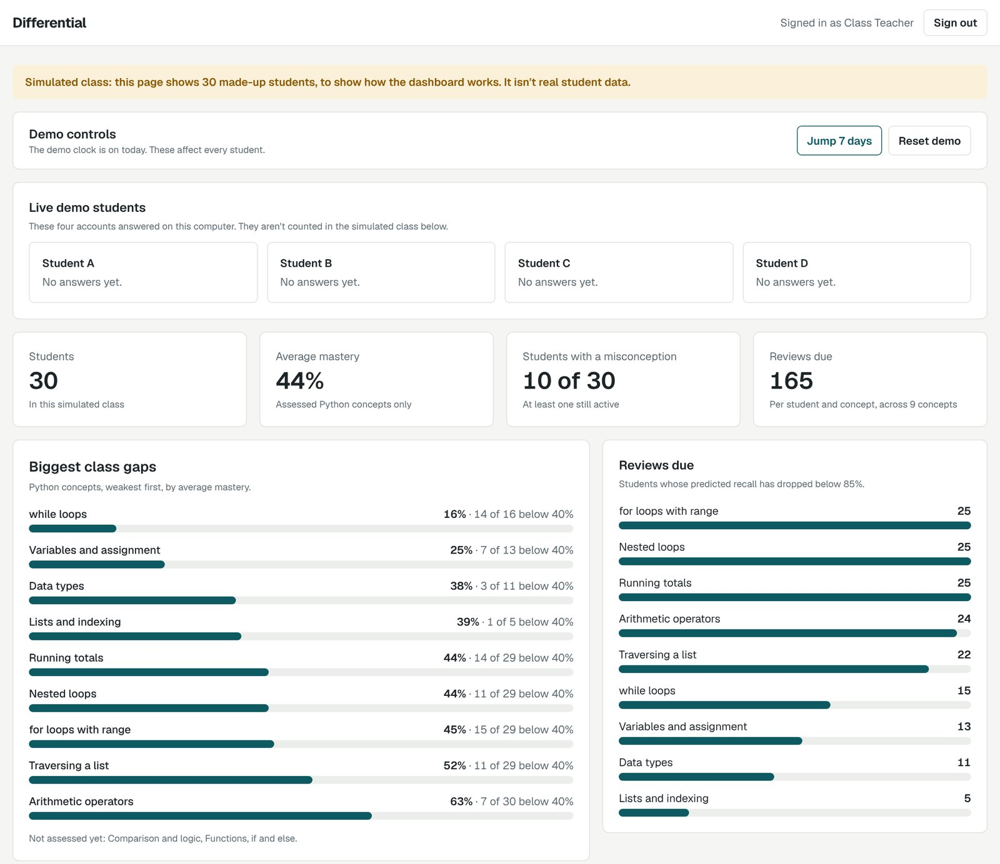
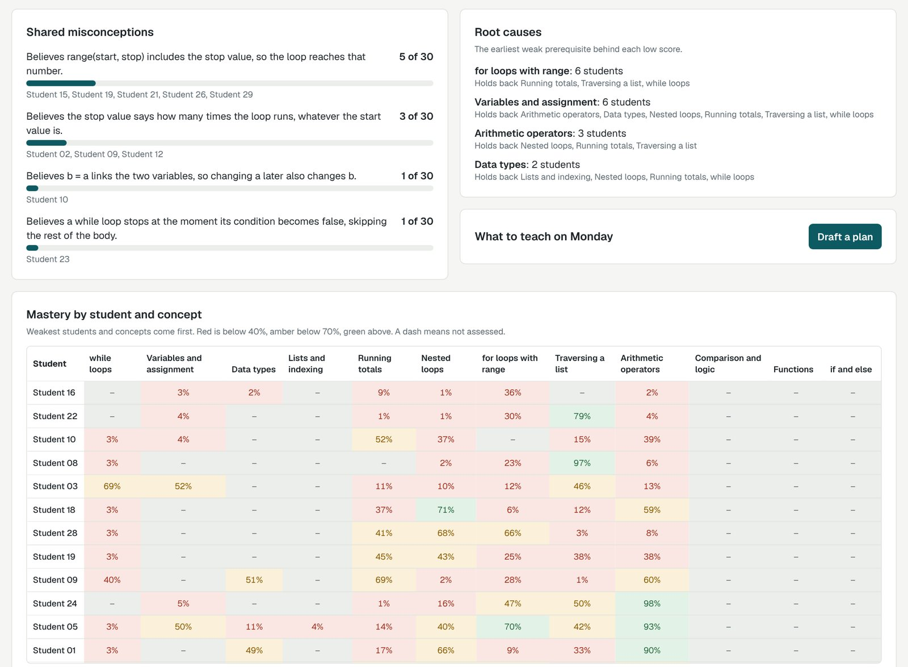
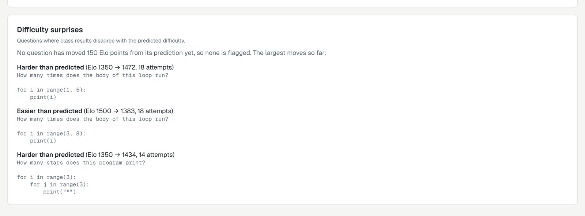
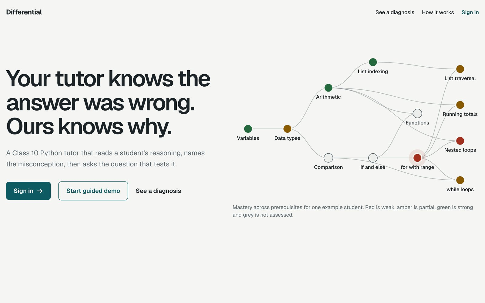

| Problem statement | Adaptive exam-prep tutor with a learner model |
| Team name | Works Locally |
| Syllabus | Class 10 Computer Science, with Python Programming fully assessed |
| Runs on | One PC, with a local LLM (qwen3.5:9b on Ollama). No cloud, and no student data leaves the machine |
| Repository | github.com/Karthikeyan-2001/agentic-ai-hackathon |
| Demo video | Link to be added |
Generic AI tutors answer questions, but they don't track what a student actually understands. Most quiz tools also look only at the final answer. Yet the same wrong answer can come from completely different misunderstandings, and a right answer can hide a wrong belief that will break on the next problem.
Differential is a Class 10 Python Programming tutor that reads the student's reasoning, not just the answer. Its name comes from a doctor's differential diagnosis: when a student makes a mistake, it forms competing explanations, then asks the question that best separates them.
Every student is asked: "How many times does the body of for i in range(1, 5): run?" (Correct answer: 4 times.)
| Student | Answer | Their reasoning | Differential's diagnosis | Mastery | Next question tests |
|---|---|---|---|---|---|
| A | 5 times Wrong | "It counts up to and including 5" | Thinks range includes its stop value | Falls | The last number printed by range(3, 7) |
| B | 5 times Wrong | "The 5 says how many times" | Thinks the stop value is the number of repeats | Falls | How many times range(4, 6) runs |
| C | 4 times Right | "It is always one less than the stop number" | Right answer, wrong reason | Unchanged | How many times range(3, 8) runs |
An answer-only tutor treats A and B the same and gives C full marks. Differential gives A and B different diagnoses and different follow-up questions, and it gives C no credit until the reasoning holds up on a loop that doesn't start at 1.

The brief asked for seven things. All seven work in the running app and appear in the guided demo (section 12).
| # | Requirement | What we built | Where in the code |
|---|---|---|---|
| 1 | Diagnostic test | An 8-question adaptive diagnostic. Each question goes to the concept the tutor is least certain about (mastery closest to 50%), with ties going to the concept the most other concepts depend on. Every answer needs written reasoning and a "Sure" / "Not sure" confidence tap. | engine/selection.py |
| 2 | Concept graph for one syllabus | 29 concepts across Class 10 Computer Science, linked by prerequisites: Python Programming (12), Computer Networks (6), Web Pages with HTML (6) and Cyber Ethics (5). A test makes sure the graph has no cycles. Python is assessed; other chapters show as "not assessed". | content/concepts.jsonengine/graph.py |
| 3 | Learner model updated after every answer | Bayesian Knowledge Tracing per concept, with slip and guess values that depend on the diagnosis, not just correctness. Changes spread to prerequisites up to two links away. Each misconception has its own probability and status. | engine/mastery.pyengine/misconceptions.py |
| 4 | Question generation targeted at weak concepts, with difficulty calibration | Code picks the target (suspected misconception, due review, or weakest ready concept), then the question closest to a 60% chance of success. Generated questions use fixed program templates: the LLM writes only the wording and options, code computes the answer and rejects bad questions. Elo ratings for students and questions update after every answer. | engine/selection.pyengine/elo.pyagent/generate.pyagent/solvers.py |
| 5 | Misconception detection from reasoning | The LLM classifies the written reasoning into an error type and matches it against a catalogue of 8 Python misconceptions. It must quote the student's own words; code checks that the quote really appears in the text. | agent/diagnose.pycontent/misconceptions.json |
| 6 | Spaced-repetition scheduling | A forgetting curve for each concept and each cleared misconception. A review comes due when predicted recall drops below 85%. A Jump 7 days button moves the app clock for the demo. | engine/scheduling.py |
| 7 | Teacher dashboard of class-wide gaps | Class summary, biggest gaps, reviews due, shared misconceptions, root causes, a student-by-concept heatmap, difficulty surprises from Elo and an AI-drafted Monday lesson plan. Always labelled "Simulated class". | engine/class_summary.pyagent/plan.pyweb/src/pages/TeacherPage.tsx |
Differential is one Python service. FastAPI serves both the API and the built React app, so there is a single process to start. The LLM is reached through one file, agent/llm.py, so changing provider changes one file.
agent/llm.py talks to the model. The engine is pure, so every formula is unit-tested and time is passed in, which also powers the "Jump 7 days" demo clock.| Folder | Owns |
|---|---|
content/ | Concept graph, misconception catalogue, 12 hand-checked seed questions, 20 pre-generated questions, 40 evaluation samples, demo script |
engine/ | Mastery, misconceptions, scheduling, Elo, graph, selection, class summary. Pure code with no LLM, database, network or system clock |
agent/ | LLM client, diagnosis, question generation, solvers, lesson plan, the agent loop |
api/ | Database tables, persistence, routes, mock sign-in and role checks |
scripts/ | Seeding the simulated class, pre-generating questions, evaluation, demo warm-up |
web/ | React app: landing page, sign-in, student app, teacher dashboard, guided demo |
| Layer | Choice |
|---|---|
| Backend | Python 3.12+, FastAPI, Uvicorn, SQLModel on SQLite, Pydantic |
| LLM | Ollama with qwen3.5:9b: thinking off, temperature 0, 8192-token context, kept loaded, 30-second timeout, up to two retries, every reply validated against a schema and cached |
| Frontend | React 19, Vite, TypeScript, Tailwind CSS, React Flow with Dagre for the concept graph |
| Tests | pytest and httpx, with a fake LLM for fast deterministic tests and a separate live-model test run |
This is the core flow of the product. Each time a student submits an answer, the agent loop runs six steps. Only one of them uses the LLM.
is_correct flag. Code compares the student's option. The LLM never marks answers.error_type, misconception_id, first_wrong_step, evidence_quote and confidence.POST /api/students/{id}/answers)| Field | Meaning |
|---|---|
correct | Whether the chosen option was right (set by code) |
diagnosis | The validated error type, misconception and quoted evidence |
diagnosis_status | ok, cached or failed, so the UI is honest about where the diagnosis came from |
mastery_changes, misconception_changes | Before and after values, shown on the result card |
trace | The reasoning behind the next question, shown in the thinking panel |
For each student, the learner model holds a mastery value for every concept and a probability for every misconception. Both update after every answer. All functions are pure and take the current time as an argument.
Each concept starts at mastery 0.30 and stays between 0.01 and 0.99. The update uses standard Bayesian Knowledge Tracing:
Correct: p' = p(1-s) / ( p(1-s) + (1-p)g ) Wrong: p' = p·s / ( p·s + (1-p)(1-g) ) Learning: p'' = p' + (1-p')·T
The key idea is that the slip (s), guess (g) and learn (T) values depend on the diagnosis, not just on right or wrong:
| Answer | Diagnosis (error_type) | s | g | T | Starting from 0.5 | Meaning |
|---|---|---|---|---|---|---|
| Correct | none (sound reasoning) | 0.1 | 0.2 | 0.1 | 0.836 | Real understanding: mastery rises |
| Correct | misconception, gap | 0.1 | 0.9 | 0 | 0.500 | Right for the wrong reason: no credit |
| Correct | slip, unclear | 0.1 | 0.5 | 0 | 0.643 | Partial credit |
| Wrong | misconception, gap, none, unclear | 0.1 | 0.2 | 0 | 0.111 | Mastery falls |
| Wrong | slip (careless error) | 0.6 | 0.2 | 0 | 0.429 | Barely lowered |
A mastery change of d also moves the concept's prerequisites, up to two links back: by d × 0.3 per link when it rises, and d × 0.1 per link when it falls. Failing "Nested loops" is mild evidence of weakness in "for loops with range", but succeeding at it is stronger evidence of strength.
Each misconception starts at probability 0.05. The confidence tap sets a multiplier k: 1.0 for "Sure", 0.6 for "Not sure".
| Event | Update |
|---|---|
| Diagnosis names misconception m with confidence c ≥ 0.6 | p += (1-p) × 0.7 × c × k |
| The chosen option maps to m, but the diagnosis didn't name it | p += (1-p) × 0.2 × k |
| Correct answer with sound reasoning on a question that has an option for m | p × 0.5 |
Status follows the probability: inactive below 0.2 → candidate 0.2–0.5 → active 0.5 and above → resolved when an active one falls below 0.2. A resolved misconception that climbs back to 0.5 becomes active again.
Each student starts at 1500 Elo. Each question starts from its difficulty prior (1 → 1200, 2 → 1350, 3 → 1500, 4 → 1650, 5 → 1800). Expected success is E = 1 / (1 + 10^((d − a)/400)), and after each answer both ratings move by 32 × (actual − E). The dashboard flags a question when its rating has moved 150 or more from its prior after at least 10 attempts, so teachers can see questions that are harder or easier than expected.
The brief asked for misconceptions to be detected from the reasoning in wrong answers, not just the wrong final answer. Differential does this in two layers: the local LLM reads the explanation, and code checks the LLM's work.
| ID | The student believes… |
|---|---|
range_includes_stop | range(start, stop) includes the stop value, so the loop reaches that number |
range_stop_is_count | The stop value says how many times the loop runs, whatever the start value is |
range_one_less_than_stop | A loop always runs one less time than its stop value, ignoring the start value |
assignment_links_variables | b = a links the two variables, so changing a later also changes b |
integer_division_rounds | // rounds to the nearest whole number instead of dropping the part after the decimal point |
string_plus_adds | + adds digits as numbers even when they are strings in quotes |
while_exits_mid_body | A while loop stops the moment its condition becomes false, skipping the rest of the body |
index_starts_at_one | List indexes start at 1, so index 1 is the first item |
Each question option is mapped to the misconceptions that would lead a student to pick it. One option can map to several misconceptions, which is exactly why reading the reasoning matters: Students A and B pick the same option for different reasons.
error_type | Meaning |
|---|---|
none | The reasoning is sound |
misconception | The reasoning shows a catalogued false belief (must name which one) |
slip | The reasoning is sound, with a careless or calculation error |
gap | The student doesn't know, or guessed |
unclear | The reasoning can't be judged from the text |
After every answer, code applies the first rule in this list that returns a question. The student's three most recent questions are always excluded.
engine/selection.py). Within a rule, the question whose expected success (from Elo) is closest to 60% wins, then question ID, so results are repeatable.When two misconceptions are both plausible, every available question gets a score:
score = sum of p(m) for each of the top-two misconceptions that has an option in the question
+ 0.5 if both have options and those options are different
The highest score wins. A question where the two beliefs lead to different wrong answers tells them apart in one step. For Student A, "What is the last number printed by range(3, 7)?" separates "includes the stop" from "stop is the count".
When a weak concept runs out of unseen questions, the agent can generate a new one. To avoid wrong answer keys, the LLM never writes the code or the answer:
agent/solvers.py: floor division, modulo, powers, running totals with range, nested-loop counts and list totals.scripts/pregenerate.py builds a pool of 20 checked questions ahead of time, so the demo doesn't wait on generation. LLM-written code is never run.
Knowledge fades. Differential models this with a forgetting curve for every concept and for every misconception the student has cleared.
Recall R = exp( −days since last practice / S ) review due when R < 0.85 Displayed mastery = mastery × (0.5 + 0.5·R)


A "Right answer, wrong reason" result explains that the answer was correct but the reasoning wouldn't hold for other cases, so mastery doesn't move.
The app has mock sign-in with one teacher and four demo students. The server checks the role on every API request: students can only see and answer their own questions, only the teacher can see the class dashboard or use the demo controls, and the teacher can read a student's progress but can't answer for them.

The dashboard turns every student's learner model into a view of class-wide gaps. To show how it works at scale, it uses a simulated class of 30 made-up students, and it says so in a banner at the top of the page.



| Panel | What it shows | How it's computed |
|---|---|---|
| Class totals | Students, average mastery, how many hold an active misconception, reviews due | Aggregated from each student's learner model |
| Biggest class gaps | Python concepts ranked weakest first, with how many students are below 40% | Average displayed mastery per concept |
| Reviews due | How many students need a review on each concept | Forgetting curve, recall below 85% |
| Shared misconceptions | Each active false belief and the students who share it | Misconception status = active |
| Root causes | The prerequisite that holds the most students back, and what it blocks | For each weak score, the deepest prerequisite also below 50% |
| Mastery heatmap | Every student against every concept, weakest first | Displayed mastery, coloured red, amber or green |
| Difficulty surprises | Questions harder or easier than predicted | Elo moved 150+ points after 10+ attempts |
| What to teach on Monday | A short draft lesson plan: a title, a board demonstration and a check question from the bank | LLM draft for the most common misconception; the teacher reviews it |
scripts/seed_class.py creates 30 students with a fixed random seed. Each has up to two hidden misconceptions and gets 12 to 15 scripted answers. When a question has an option for a hidden misconception, the student picks it 80% of the time; otherwise they answer correctly with the probability Elo predicts. Every answer goes through the real engine, without LLM calls. This data shows how the dashboard works. It isn't evidence that diagnosis works; that comes from the evaluation in section 11.
We wrote 40 labelled reasoning samples as test cases. We used 10 to tune the prompt and held out 30, which were used only for the reported result. scripts/evaluate.py runs them against the local model and saves results to eval/results.json.
| Measure (30 held-out cases) | Thinking off (used) | Thinking on |
|---|---|---|
| Error type correct | 30 of 30 (100%) | 30 of 30 (100%) |
| Misconception identified, where one was expected | 18 of 18 (100%) | 18 of 18 (100%) |
| Average time per diagnosis | 0.84 seconds | 3.84 seconds |
Turning the model's thinking mode on gave the same accuracy at about 4.5 times the time, so we kept it off. All 8 misconceptions were covered in the held-out set.
The project has 302 automated tests, all passing, plus a separate live-model suite (pytest -m llm) that runs the demo cases against the real model.
| Level | What is covered |
|---|---|
| Engine unit tests | Every formula value in section 5, clamping, misconception statuses, recall, Elo |
| Graph and content tests | No cycles, valid references, exactly one correct option per question, solver accuracy |
| Selection tests | Each priority rule and repeatable tie-breaks |
| Agent tests (fake LLM) | Quote validation, retries, failure handling, rejected generated questions |
| Demo tests (fake LLM) | Students A, B and C get the expected mastery outcomes and next questions |
| API and sign-in tests | Answering changes state; role checks block the wrong accounts |
| Live LLM tests | The demo cases against qwen3.5:9b |
scripts/warm_demo.py runs the scripted demo answers through the real model beforehand, so the demo keeps working even if Ollama stops. It fails loudly if the tutor stops following the script.ok, cached or failed), so it never hides where a result came from.Clicking Start guided demo on the landing page resets the four demo students and opens a step bar at the bottom of the page. It switches accounts automatically and fills in answers from content/demo_script.json. Each answer still goes through the same diagnosis and scoring as a typed one. The whole demo takes about 4 minutes.
| Step | Account | What happens | Requirement shown |
|---|---|---|---|
| 1 | Student A | Answers "5 times… up to and including 5". Diagnosed with range_includes_stop; mastery 30% → 5%. The next question tests that belief; A gets it right and the probability falls from 72% to 36%. | Misconception from reasoning, learner model |
| 2 | Student B | Same wrong answer, different reason ("the 5 says how many times"). Gets a different diagnosis and a different next question. | Misconception from reasoning |
| 3 | Student C | Right answer, wrong reason: mastery stays at 30%. When the reasoning holds on a different start value, mastery rises to 69%. | Learner model |
| 4 | Student D | Takes the 8-question diagnostic ("question N of 8"), then the concept map shows a red weak spot. | Diagnostic test, concept graph |
| 5 | Student D | Gets a "Generated question" on the weakest concept, picked for about 60% expected success. | Targeted generation, calibration |
| 6 | Teacher | Clicks Jump 7 days; reviews due rise across the class. | Spaced repetition |
| 7 | Student C | "for loops with range" has faded to 3% recall, so the tutor brings it back as a review; mastery 69% → 92%. | Spaced repetition |
| 8 | Teacher | Shows the biggest gaps, shared misconceptions and root causes, drafts the Monday plan, and shows Elo difficulty moves (e.g. 1350 → 1476). | Teacher dashboard, calibration |
| 9 | Close | Shows the accuracy result and how it was measured. | Evaluation |
The generated question in step 5 was created ahead of time by scripts/pregenerate.py and is served to any student who needs it; it isn't written live for Student D.

You need Python 3.12 or later, Node 20 or later, and Ollama running locally. The commands below are for Windows; on macOS or Linux use .venv/bin instead of .venv/Scripts.
ollama pull qwen3.5:9b python -m venv .venv .venv/Scripts/pip install -r requirements.txt npm --prefix web install npm --prefix web run build
.venv/Scripts/python -m scripts.seed_class # creates the simulated class of 30 .venv/Scripts/python -m scripts.warm_demo # caches the demo answers .venv/Scripts/python -m uvicorn api.main:app --port 8000
Then open http://localhost:8000 and click Start guided demo, or sign in with a demo account.
| Role | Username | Password |
|---|---|---|
| Teacher | teacher | Teacher-Demo-2026 |
| Student A | student.a | Student-A-2026 |
| Student B | student.b | Student-B-2026 |
| Student C | student.c | Student-C-2026 |
| Student D (takes the diagnostic) | student.d | Student-D-2026 |
.venv/Scripts/python -m pytest # 302 tests, fake LLM .venv/Scripts/python -m pytest -m llm # demo cases against the real model
| Route | Purpose |
|---|---|
GET /api/students/{id}/next | Next question with the trace, or "all caught up" |
POST /api/students/{id}/answers | Submit option, reasoning and confidence; runs the agent loop |
POST /api/clock/advance / reset | Move the demo clock (teacher only) |
GET /api/class/summary | Dashboard data (teacher only) |
POST /api/class/plan | Draft the Monday lesson plan (teacher only) |
POST /api/demo/reset | Restore the demo students and clock (teacher only) |
Differential meets all seven requirements of the brief in one running app. What sets it apart is that it diagnoses why a student is wrong from their own words, treats a right answer with wrong reasoning as no evidence of mastery, and chooses the question that best separates competing explanations. Throughout, the LLM only interprets and tested code makes every decision, and everything runs locally on one PC.